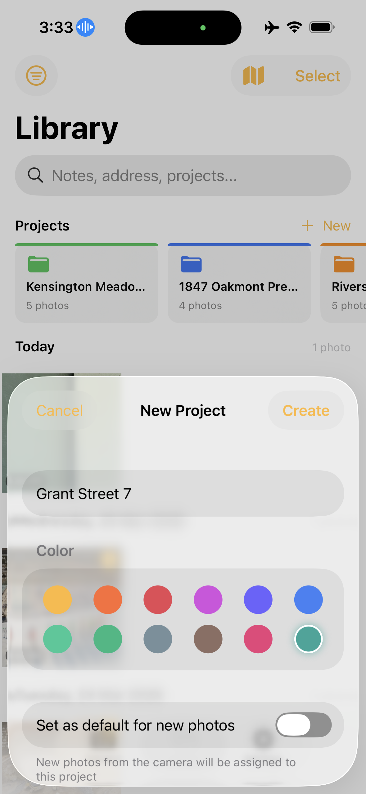
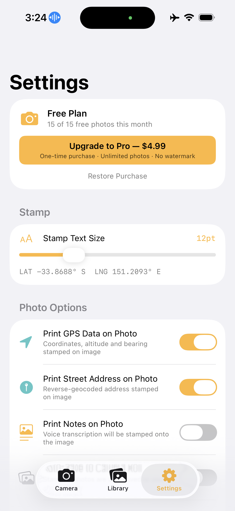
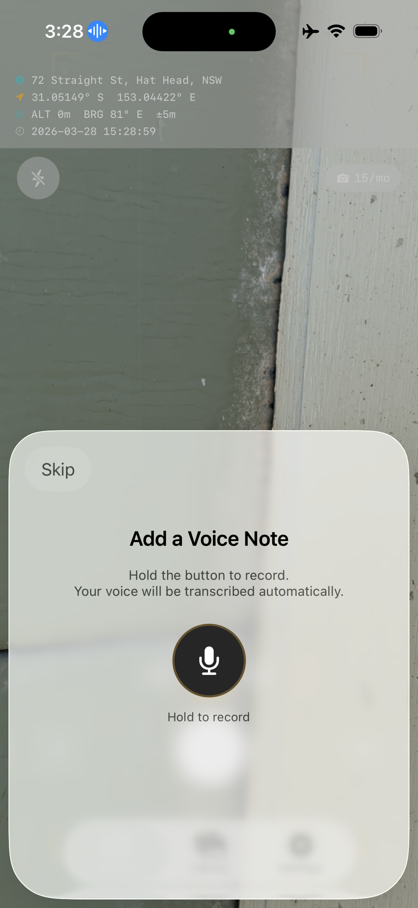
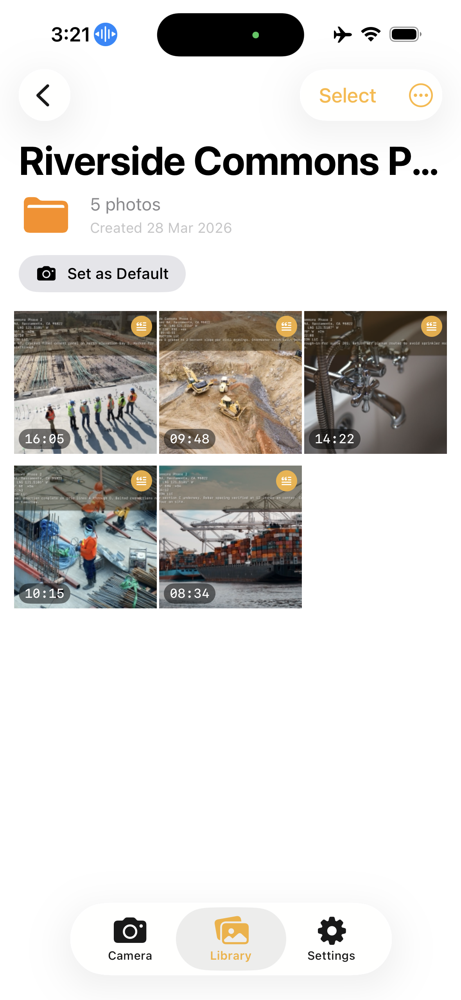
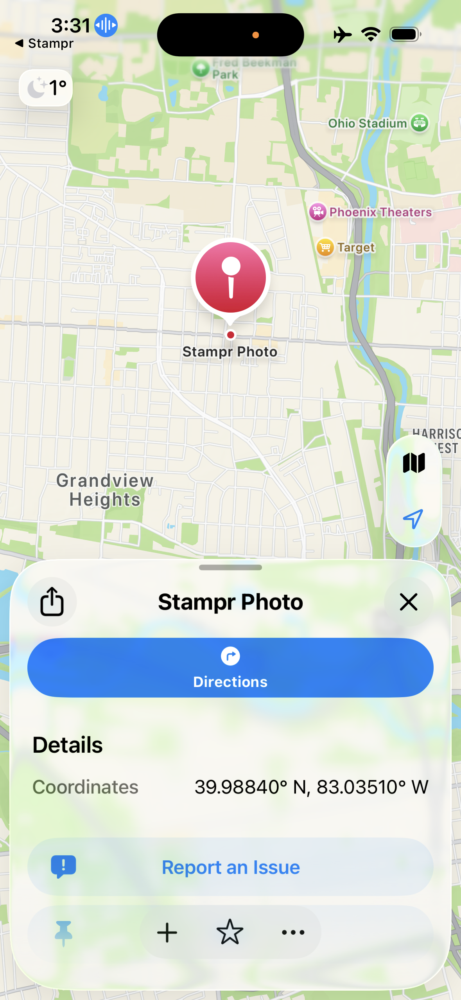
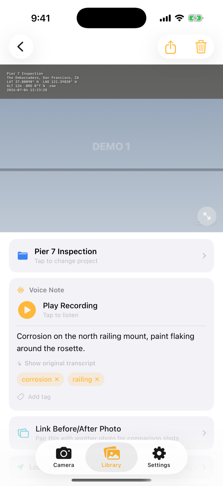
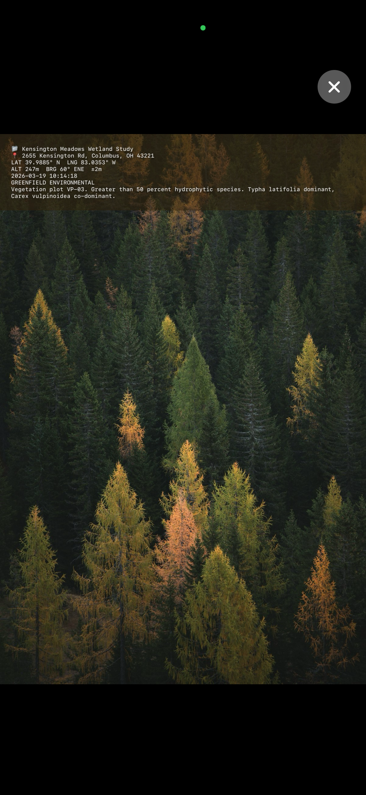

Stampr — Help & User Guide
Everything you need to know to get the most out of Stampr.
Contents
Getting Started
Stampr is a GPS field camera designed for professionals who need location-stamped photos with metadata. It burns GPS coordinates, altitude, bearing, street address, and optional voice notes directly onto your photos.
The app has three tabs:
- Camera — Take GPS-stamped photos with a live metadata overlay.
- Library — Browse, search, and organize your photos by project.
- Settings — Customise the stamp format, toggle features, and manage your Pro subscription.



Grant Permissions
When you first open Stampr, allow access to your camera and location. Microphone access is needed only if you use voice notes. You can change these anytime in iOS Settings.
Take Your First Photo
Point the camera and tap the shutter button. Stampr captures the photo and stamps it with your current GPS data, address, and timestamp.
Add a Voice Note (Optional)
After each photo, hold the microphone button to record a voice note. Stampr transcribes it automatically and can burn the text onto the photo.
Review in Library
Switch to the Library tab to see all your stamped photos. Tap any photo for full details, metadata, and sharing options.
Using the Camera
The Camera tab is where you take GPS-stamped photos. The live stamp overlay at the top shows exactly what will be burned onto your image.
Stamp Overlay
The live GPS data is displayed at the top of the camera view. This is exactly what will be stamped onto your photo. It updates in real time as you move. The overlay shows:
- Street address (reverse-geocoded)
- GPS coordinates (latitude and longitude)
- Altitude, bearing, and accuracy
- Date and time
Zoom
Pinch to zoom or tap the 1x, 2x, or 5x preset buttons above the shutter. The zoom level is shown on screen.
Flash
Tap the flash icon in the top-left corner to toggle the flash on or off.
Voice Notes
After taking a photo, Stampr prompts you to record a voice note. This is useful for adding context that would be tedious to type — site conditions, observations, measurements, or instructions.

Record
After taking a photo, hold the microphone button to record. Release to stop.
Auto-Transcription
Stampr transcribes your voice note automatically using on-device speech recognition. Your audio is never sent to external servers.
Print on Photo (Optional)
Enable "Print Notes on Photo" in Settings to burn the transcribed text directly onto the stamp overlay.
Photo Library
Browsing Photos
The Library tab shows all your photos in a grid sorted by date. Use the filter menu to narrow by time period or project. Use the search bar to find photos by notes, address, or project name.

Map View
Toggle the map icon to see your photos plotted geographically. Tap a pin to see the photo details and get directions. Only photos with valid GPS coordinates appear on the map.

Selecting Multiple Photos
Tap "Select" to enter selection mode. Tap photos to select them, then share or delete the selection using the toolbar at the bottom.
Photo Details
Tap any photo in the Library to see its full metadata. The detail view shows everything that was captured with the photo.


The detail view includes:
- Stamped photo — The full image with GPS data burned on
- Project — Tap to change or assign a project
- Notes — Voice transcription or manually entered text (editable)
- Location — Interactive map, street address, and coordinates
- GPS Data — Altitude, bearing, tilt/roll, accuracy, and capture time
- Watermark — Custom text if set (Pro feature)
Stamped Photo Example
Here is what a fully stamped photo looks like. The GPS data, address, project name, timestamp, and voice note transcription are all burned directly onto the image.

The stamp includes the project name, street address, GPS coordinates, altitude, bearing, date, watermark, and any voice note transcription — all configurable in Settings.
Projects
Projects help you organize photos by job site, inspection, or any grouping that makes sense for your work.
Creating a Project
In the Library tab, tap "+ New" next to the Projects row. Give it a name, pick a colour, and optionally set it as your default project.
Assigning Photos
From the photo detail screen, tap the project card to move a photo to a different project or remove it from a project. The stamp on the photo updates automatically to reflect the new project name.
Default Project
Set a default project so all new photos are automatically assigned to it. This is useful when you're on-site and want every photo tagged to the current job.
Renaming a Project
Open the project, tap the menu, and choose "Rename". After renaming, Stampr asks if you want to update the project name on all existing photos in that project.
Deleting a Project
From the project menu, tap "Delete Project". You can choose to delete the photos as well or keep them unassigned. If you keep the photos, Stampr offers to remove the old project name from the stamps.
Settings & Customisation
Tap the gear icon or the Settings tab to customise how Stampr works.
| Setting | Description | Default |
|---|---|---|
| Stamp Text Size | Font size of the stamp overlay (8-24pt) | 12pt |
| Coordinate Format | Decimal Degrees or DMS | Decimal |
| Watermark | Custom text on every photo (e.g. company name) | None |
| Print Notes on Photo | Burns voice transcription onto the stamp | Off |
| Print GPS on Photo | Include coordinates and altitude on stamp | On |
| Print Address on Photo | Include street address on stamp | On |
| Voice Recording | Prompt to record after each photo | On |
| Include Report When Sharing | Attach PDF report with GPS metadata | On |
| Auto-Save to Camera Roll | Save stamped photos to device photo library | Off |
| Location Services | Enable GPS, address, and compass data | On |
Stampr Pro
Stampr includes 15 free photos per month. To unlock unlimited photos and remove the watermark, purchase Stampr Pro — a one-time payment with no subscription.
Restoring Your Purchase
If you reinstall the app or switch devices, go to Settings and tap "Restore Purchase". Your Pro access will be restored automatically via the App Store. Make sure you're signed into the same Apple ID you used for the original purchase.
Permissions
Camera
Required to take photos. Without camera access, the app cannot function.
Location
Used to stamp GPS coordinates, altitude, bearing, and street address onto photos. You can disable this in Settings if you don't need location data.
Microphone
Needed for voice note recording. Only used when you actively hold the record button. You can disable voice recording in Settings.
Speech Recognition
Used to transcribe voice notes into text on-device. Your audio is not sent to external servers.
Photo Library
Required only if you enable "Auto-Save to Camera Roll" in Settings.
Frequently Asked Questions
Where are my photos stored?
Can I change the stamp after taking a photo?
Does Stampr send my location data anywhere?
Why is the address not showing?
Can I use Stampr offline?
How do I share photos with the GPS report?
What happens when I move a photo to a different project?
I purchased Pro but it's not showing. What do I do?
The app crashed. What should I do?
Is my voice recording data sent to Apple or any server?
Still need help?
Email us at support@top7systems.net and we'll get back to you within 48 hours.